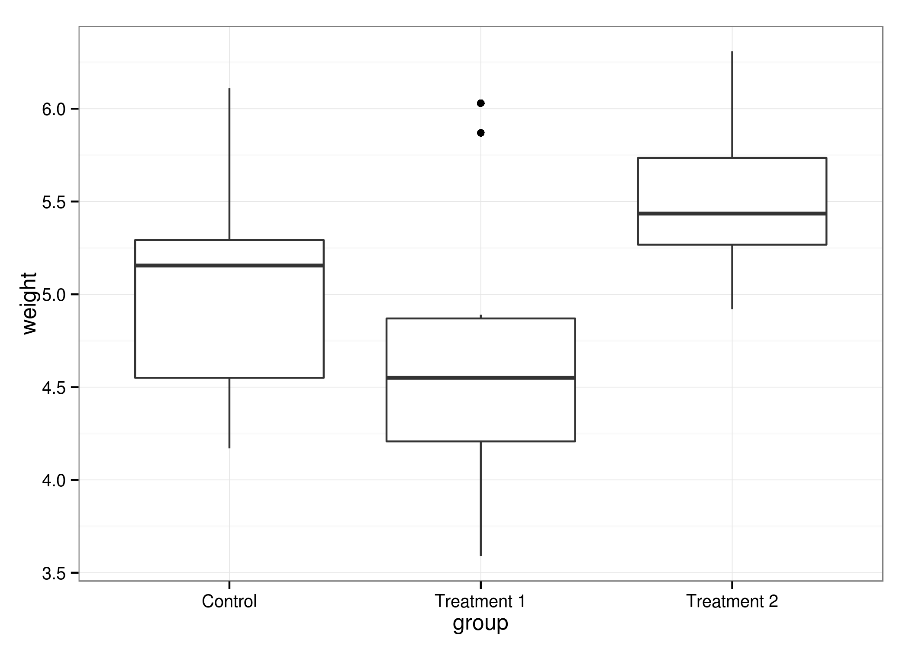

<!-- html table generated in R 3.1.3 by xtable 1.7-4 package -->
<!-- Sat Mar 14 10:50:54 2015 -->
<table border=1>
  <tr> <td> ggplot2 </td> <td> toby-rect </td> <td> master </td> </tr>
  <tr> <td>  </td> <td>  </td> <td>  </td> </tr>
   </table>
